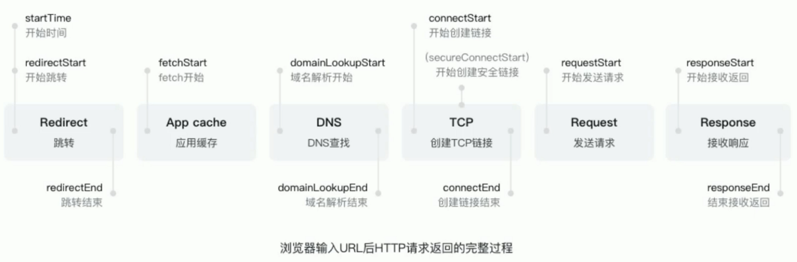
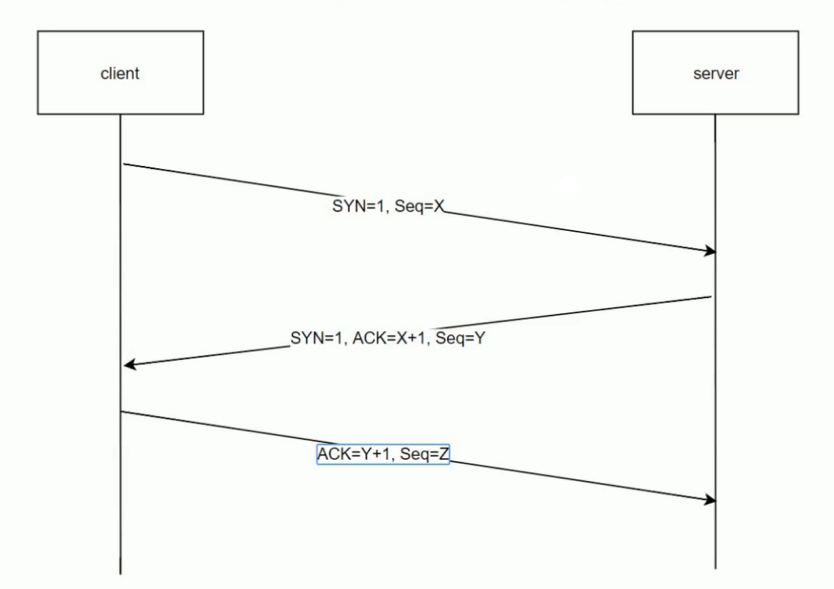
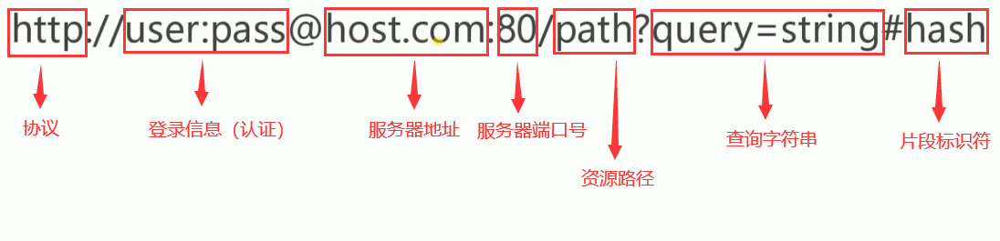
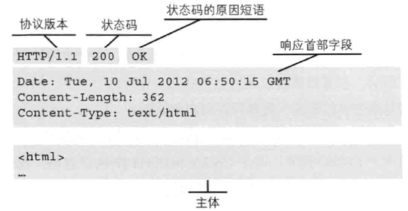

HTTP 是 HyperText Transfer Protocol（超文本传输协议）的简写，它是 TCP/IP 协议集中的一个应用层协议，是客户端与服务端进行交互时必须遵循的规则。它用于定义 Web 浏览器与 Web 服务器之间交换数据的过程以及数据本身的格式，底层是靠 TCP 进行可靠地信息传输。
客户端向服务端发送 HTTP 请求返回的完整过程：

网络模型介绍

应用层
应用层决定了向用户提供应用服务时通信的活动，它构建于 TCP 协议之上，HTTP协议也处于该层。
TCP/IP 协议族内预存了各类通用的应用服务。比如，FTP（File Transfer Protocol，文件传输协议）和 DNS（Domain Name System，域名系统）服务就是其中两类。
传输层
传输层对上层应用层，提供处于网络连接中的两台计算机之间的数据传输，向用户提供可靠的端到端服务，并且传输层向上层屏蔽了下层数据通信的细节。
传输层主要有两个协议: TCP （Transmission Control
Protocol，传输控制协议）和 UDP（User Data Protocol，用户数据
报协议）。
在更多的情况下，使用的是 TCP 协议，因为它是一个可靠的传输协议。
网络层
网络层，为数据在结点之间传输创建逻辑链路，用来处理在网络上流动的数据包。数据包是网络传输的最小数据单位。该层规定了通过怎样的路径(所谓的传输路线)到达对方计算机，并把数据包传送给对方。与对方计算机之间通过多台计算机或网络设备进行传输时，网络层所起的作用就是在众多的选项内选择一条传输路线。
数据链路层
数据链路层，在通信的实体间建立数据链路连接。简单地说，就是将两台物理设备通过软件服务（如操作系统，设备驱动）建立起电路上的连接，使两台设备可以传输数据。
物理层
物理层，主要作用是定义物理设备如何传输数据。这里的物理设备，包括电脑硬件，网线等。
HTTP 协议发展历史
HTTP/0.9
HTTP 于 1990 年问世。那时的 HTTP 并没有作为正式的标准被建立。
现在的 HTTP 其实含有 HTTP1.0 之前版本的意思，因此被称为 HTTP/0.9。
该版本极其简单：
- 只有一个命令 GET；
- 没有 Header 等描述数据的信息；
- 服务器在发送数据完毕后，就关闭 TCP 连接。
HTTP/1.0
HTTP/1.0 版本与 HTTP/0.9 相比，主要有：
- 增加了很多命令，如 POST，PUT，HEAD；
- 增加了 Status Code 和 Header 相关内容；
- 增加了多字符集支持、多部分发送(multi-part type)、权限(authorization)、缓存(cache)、内容编码(content encoding)等。
HTTP/1.1
HTTP/1.1 是目前主流的 HTTP 版本，有比较完善的功能。
增加了 PATCH OPTIONS、DELETE 命令。
持久连接，即 TCP 连接默认不关闭，可以被多个请求复用，提高了请求性能。
管道机制(pipeline)，即在同一个 TCP 连接里面，客户端可以同时发送多个请求。例如，浏览器同时发出 A 请求和 B 请求，但是服务器还是按照顺序，先回应 A 请求，完成后再回应 B 请求。
增加 Host 字段，可以将请求发往同一个服务器的不同网站，为虚拟主机打下了基础。这个字段增加的好处就是在同一个物理服务器中可以同时部署多个 Web 服务，这样可以提高物理服务器的使用效率。
HTTP2
HTTP2 目前还没有普及，但肯定是未来的主流。HTTP2 主要解决了传输性能的问题。
所有数据以二进制传输。在 HTTP/1.1 版本中大部分数据是以文本形式传输，在 HTTP2 版本中，所有数据以二进制传输，统称为“帧”。
多工。因为有了以二进制传输的好处，同一个连接里面发送多个请求不再需要按照顺序来进行返回处理，而是同时返回。在返回第一个请求的同时也可以返回第二个请求，这样它就是一个并行的效率，可以更大限度地让整个 Web 应用的传输效率有一个质的提升。
头信息压缩。在 HTTP/1.1 中，每次发送请求和返回请求，它的 HTTP 头信息总是要完整发送和返回，而这部分头信息内容是以字符串形式保存，所以它占用的带宽量是很大的。而 HTTP2 中，对头信息进行了压缩，减少了对带宽的占用。
服务器推送。HTTP/2 允许服务器未经请求，主动向客户端发送资源。常见场景是客户端请求一个网页，这个网页里面包含很多静态资源。正常情况下，客户端必须收到网页后，解析 HTML 源码，发现有静态资源，再发出静态资源请求。其实，服务器可以预期到客户端请求网页后，很可能会再请求静态资源，所以就主动把这些静态资源随着网页一起发给客户端了。
HTTP 三次握手

为了准确无误地将数据送达目标处，TCP 协议采用了三次握手 (three-way handshaking) 策略。用 TCP 协议把数据包送出去后，TCP 不会对传送后的情况置之不理，它一定会向对方确认是否成功送达。握手过程中使用了 TCP 的标志——SYN(synchronize) 和 ACK(acknowledgement)。
发送端首先发送一个带 SYN 标志的数据包给对方。接收端收到后，回传一个带有 SYN/ACK 标志的数据包以示传达确认信息。最后，发送端再回传一个带 ACK 标志的数据包，代表“握手”结束。
通俗点讲，发送端先发送一个数据包给接收端，当接收端收到数据包后就会知道发送端的发送数据功能正常；然后接收端又返回一个数据包给发送端，当发送端接收到数据包后就会知道接收端的发送和接收数据的功能正常；最后发送端再先接收端发送一个数据包，当接收端收到数据包后就会知道发送端的接收数据的功能也正常。这样发送端和接收端的发送和接收数据的功能都正常，就可以可靠地进行数据交互了。
若在握手过程中某个阶段莫名中断，TCP 协议会再次以相同的顺序发送相同的数据包。
URI、URL 和 URN
URI
URI（统一资源标识符）是 Uniform Resource Identifier 的缩写。它主要用于定位某一类特定的资源而设计，用来唯一标识互联网上的信息资源。它包括 URL 和 URN。
URL
URL（统一资源定位符）是 Uniform Resource Locator 的缩写。它用来找到资源所在的位置，并且去访问和得到资源。
URL 格式：

- 协议
获取资源时要指定协议类型。比如，http、https、ftp 等协议。
- 登录信息（认证）
指定用户名和密码作为从服务器端获取资源时必要的登录信息（身份认证）。这种方式在现在的 Web 应用开发中不太会使用到。如果用户每次访问资源，都需要在 URL 中填写用户名和密码，是很不方便的，也是很安全的做法。
- 服务器地址
指定资源所在服务器在互联网中的位置。它可以是 ip 地址，也可以是 DNS 可解析的地址。
- 服务器端口号
指定服务器连接的网络端口号。每一台服务器都有很多的端口，在这台服务器上可以运行很多软件的 Web 服务，这些 Web 服务可以监听不同的端口。如果我们要找这台服务器上某一个 Web 服务里面的资源，就要指定要找的是哪个 Web 服务，也就是说端口是用来定位服务器上的某个 Web 服务的。
- 资源路径
指定服务器上的文件路径来定位特指的资源。这与 UNIX 系统的文件目录结构相似。
- 查询字符串
针对已指定的文件路径内的资源，可以使用查询字符串传入任意参数。
- 片段标识符
使用片段标识符通常可标记出已获取资源中的子资源(文档内的某个位置)。
URN
URN（永久统一资源定位符）是 Uniform Resource Name 的缩写。作为 HTTP 服务，如果某一类资源改变了位置，导致它的 URL 链接无法访问到资源，那么 URN 就解决了这个问题。也就是说，即便是资源改变了位置，通过 URN 还是可以访问到。
HTTP 报文格式
用于 HTTP 协议交互的信息被称为 HTTP 报文。请求端（客户端）的 HTTP 报文叫做请求报文，响应端（服务器端）的叫做响应报文。HTTP 报文本身是由多行（用 CR+LF 作换行符）数据构成的字符串文本。HTTP 报文大致可分为报文首部和报文主体两块。两者由最初出现的空行(CR+LF)来划分。通常，并不一定要有报文主体。
请求报文
请求报文是由请求方法、请求 URL、协议版本、可选的请求首部字段和内容实体构成的。

响应报文
响应报文基本上由协议版本、状态码(表示请求成功或失败的数字代码)、用以解释状态码的原因短语、可选的响应首部字段以及实体主体构成。

HTTP 方法
HTTP 方法是用来定义对资源的操作，从定义上讲有各自的语义。注意，语义是定义上的，具体的操作需要根据实际情况来。
HTTP/1.0 和 HRTTP/1.1 支持的方法：
| 方法 | 说明 | 支持的 HTTP 协议版本 |
| – | – | – | – |
| GET | 获取资源 | 1.0、1.1 |
| POST | 传输实体主体 | 1.0、1.1 |
| PUT | 传输文件 | 1.0、1.1 |
| HEAD | 获得报文首部 | 1.0、1.1 |
| DELETE | 删除文件 | 1.0、1.1 |
| OPTIONS | 询问支持的方法 | 1.1 |
| TRACE | 追踪路径 | 1.1 |
| CONNECT | 要求用隧道协议连接代理 | 1.1 |
| LINK | 建立和资源之间的联系 | 1.0 |
| UNLINE | 断开连接关系 | 1.0 |
其中，LINK 和 UNLINK 已被 HTTP/1.1 废弃，不再使用。
GET: 获取资源
GET 方法用来请求访问已被 URL 识别的资源。指定的资源经服务器端解析后返回响应内容。
POST: 传输实体主体
POST 方法用来传输实体的主体。虽然用 GET 方法也可以传输实体的主体，但一般不用 GET 方法进行传输，而是用 POST 方法。虽说POST 的功能与 GET 很相似，但 POST 的主要目的并不是获取响应的主体内容。
PUT: 传输文件
PUT 方法用来传输文件。就像 FTP 协议的文件，上传一样，要求在请求报文的主体中包含文件内容，然后保存到请求 URL 指定的位置。
但是，鉴于 HTTP/1.1 的 PUT 方法自身不带验证机制，任何人都可以上传文件，存在安全性问题，因此一般的 Web 网站不使用该方法。若配合 Web 应用程序的验证机制，或架构设计采用 REST(REpresentationalState ransfer, 表征状态转移) 标准的同类Web 网站，就可能会开放使用 PUT 方法。
HEAD: 获得报文首部
HEAD 方法和 GET 方法一样，只是不返回报文主体部分。用于确认 URL 的有效性及资源更新的日期时间等。
DELETE: 删除文件
DELETE 方法用来删除文件，是与 PUT 相反的方法。DELETE 方法按请求 URL 删除指定的资源。
但是，HTTP/1.1 的 DELETE 方法和 PUT 方法一样不带验证机制，所以一般的 Web 网站也不使用 DELETE 方法。当配合 Web 应用程序的验证机制，或遵守 REST 标准时还是有可能会开放使用的。
OPTIONS: 询问支持的方法
OPTIONS 方法用来查询针对请求 URL 指定的资源支持的方法。就是我们常说的，预请求。
TRACE: 追踪路径
TRACE 方法是让 Web 服务器端将之前的请求通信环回给客户端的方法。
但是，TRACE 方法本来就不怎么常用，再加上它容易引发 XST（Cross-Site Tracing，跨站追踪）攻击，通常就更不会用到了。
CONNECT: 要求用隧道协议连接代理
CONNECT 方法要求在与代理服务器通信时建立隧道，实现用隧道协议进行 TCP 通信。主要使用 SSL （Secure Sockets Layer，安全套接层）和 TLS （Transport Layer Security，传输层安全）协议把通信内容加密后经网络隧道传输。
CONNECT 的格式：
CONNECT 代理服务器名称 端口号 HTTP版本
HTTP 访问控制(CORS)
CORS
跨域资源共享(CORS)是一种机制，它使用额外的 HTTP 头来告诉浏览器 让运行在一个服务器上的 Web 应用被准许访问来自不同源服务器上的指定的资源。当一个资源从与该资源本身所在的服务器不同的域、协议或端口请求一个资源时，资源会发起一个跨域 HTTP 请求。
另外，规范要求，对那些可能对服务器数据产生副作用的 HTTP 请求方法（特别是 GET 以外的 HTTP 请求，或者搭配某些 MIME 类型的 POST 请求），浏览器必须首先使用 OPTIONS 方法发起一个预请求（preflight request），从而获知服务端是否允许该跨域请求。服务器确认允许之后，才发起实际的 HTTP 请求。在预请求的返回中，服务器端也可以通知客户端，是否需要携带身份凭证（包括 Cookies 和 HTTP 认证相关数据）。
跨域：指不同域名之间相互访问，浏览器不能执行其他网站的脚本。它是由浏览器的同源策略造成的，是浏览器施加的安全机制。
同域：指同一协议、同一 ip 地址、同一端口，其中有一个不同就会产生跨域。
预请求
预请求必须首先使用 OPTIONS 方法发起一个请求到服务器，以获知服务器是否允许该实际请求。预请求的使用，可以避免跨域请求对服务器的用户数据产生未知的影响。
当满足以下条件时，可以不发送预请求：
HTTP 方法
- GET
- HEAD
- POST
Fetch Standard 定义的 CORS-safelisted request-header。安全的 request-header 如下：
- Accept
- Accept-Language
- Content-Language
- Content-Type（需要注意额外的限制）
- DPR
- Downlink
- Save-Data
- Viewport-Width
- Width
Content-Type 的值仅限于下列三者之一：
- text/plain
- multipart/form-data
- application/x-www-form-urlencoded
XMLHttpRequestUpload 对象均没有注册任何事件监听器（不常用）。
请求中没有使用 ReadableStream 对象（不常用）。
这些跨域请求与浏览器发出的其他跨域请求一样。如果服务器未返回正确的响应首部，则请求方不会收到任何数据。因此，那些不允许跨域请求的网站无需为这一新的 HTTP 访问控制特性担心。
预请求相关的响应首部字段
- Access-Control-Allow-Origin
Access-Control-Allow-Origin 响应首部字段，表明服务器允许访问资源的域。其语法如下：
Access-Control-Allow-Origin: [origin] | *
其中，origin 参数的值指定了允许访问该资源的外域 URI。对于不需要携带身份凭证的请求，服务器可以指定该字段的值为 “*”，表示允许来自所有域的请求。
- Access-Control-Allow-Headers
Access-Control-Allow-Headers 响应首部字段用于预请求的响应，指明了实际请求中允许携带的首部字段。其语法如下：
Access-Control-Allow-Headers: [field-name]（自定义的请求头） | *
当有多个请求头时，使用逗号分隔。
- Access-Control-Expose-Headers
在跨域访问时，XMLHttpRequest 对象的 getResponseHeader() 方法只能拿到一些最基本的响应头，如 Cache-Control、Content-Language、Content-Type、Expires、Last-Modified 等，如果要访问其他头，则需要服务器设置响应头。
Access-Control-Expose-Headers 响应首部字段让服务器把允许浏览器访问的头放入白名单，例如：
Access-Control-Expose-Headers: X-My-Count, X-My-Title
- Access-Control-Allow-Methods
Access-Control-Allow-Methods 响应首部字段用于预请求的响应，指明了实际请求所允许使用的 HTTP 方法。其语法如下：
Access-Control-Allow-Methods: [method] | *
当有多个方法时，用逗号分隔。
- Access-Control-Max-Age
Access-Control-Max-Age 响应首部字段指定了预请求的结果能够被缓存多久。在有效时间内，浏览器无须为同一请求再次发起预请求。请注意，浏览器自身维护了一个最大有效时间，如果该首部字段的值超过了最大有效时间，将不会生效。其语法如下：
Access-Control-Max-Age: [detla-seconds]
detla-seconds 参数表示预请求的结果在多少秒内有效。
- Access-Control-Allow-Credentials
Access-Control-Allow-Credentials 响应首部字段指定了当浏览器的 credentials 设置为 true 时是否允许浏览器读取 response 的内容。当用在对预请求的响应中时，它指定了实际的请求是否可以使用 credentials。请注意：简单 GET 请求不会被预检；如果对此类请求的响应中不包含该字段，这个响应将被忽略掉，并且浏览器也不会将相应内容返回给网页。
可缓存性
HTTP/1.1 定义的 Cache-Control 头用来区分对缓存机制的支持情况，请求头和响应头都支持这个属性。通过它提供的不同的值来定义缓存策略。
公共缓存 public
Cache-Control: public
“public” 表示 HTTP 请求在返回的过程中，所经过的任何路径（比如中间代理、CDN等）都可以对响应的内容进行缓存。
私有缓存 private
Cache-Control: private
“private” 表示响应内容只有发起请求的那个浏览器可缓存。
强制确认缓存 no-cache
Cache-Control: no-cache
“no-cache” 表示每次有请求发出时，缓存会将此请求发到服务器，服务器端会验证请求中所描述的缓存是否过期，若未过期，则缓存才使用本地缓存副本。使用 no-cache 指令的目的是为了防止从缓存中返回过期的资源。
禁止进行缓存 no-store
Cache-Control: no-store
“no-store” 表示缓存中不得存储任何关于客户端请求和服务端响应的内容。每次由客户端发起的请求都会下载完整的响应内容。
缓存过期机制 max-age
Cache-Control: max-age=[seconds]
过期机制中，最重要的指令是 “max-age=
缓存验证确认 must-revalidate
“must-revalidate” 表示在设置了 max-age 的缓存中，必须先从服务端重新请求资源，以验证缓存是否真的过期了，而不能直接使用本地的缓存。
缓存验证
当缓存的文档过期后，需要进行缓存验证或者重新获取资源。只有在服务器返回强校验器或者弱校验器时才会进行验证。
Last Modified
Last-Modified（上次修改时间）响应头可以作为一种弱校验器，通过对比上次修改时间以验证资源是否需要更新。说它弱是因为它只能精确到一秒。如果响应头里含有这个信息，客户端可以在后续的请求中带上 If-Modified-Since 或 If-Unmodified-Since 来验证缓存。
ETag
ETag 是缓存的一种强校验器，主要通过数据签名进行资源验证，最典型的做法是对资源进行哈希值计算。如果资源请求的响应头里含有 ETag，客户端可以在后续的请求的头中带上 If-Match 或 If-None-Match 头来验证缓存。
最后，当客户端向服务端发起缓存校验的请求时，服务端会返回 200 ok 表示返回正常的结果或者 304 Not Modified（不返回 body）表示浏览器可以使用本地缓存文件。304 的响应头也可以同时更新缓存文档的过期时间。
HTTP Cookie
HTTP Cookie（也叫 Web Cookie 或浏览器 Cookie）是服务器发送到用户浏览器并保存在本地的一小块数据，它会在浏览器下一次向同一服务器再发起请求时被携带并发送到服务器上。通常，它用于告知服务端两个请求是否来自同一浏览器，如保持用户的登录状态。Cookie 使基于无状态的 HTTP 协议记录稳定的状态信息成为了可能。
Cookie 主要用于以下三个方面：
- 会话状态管理（如用户登录状态、购物车、游戏分数或其它需要记录的信息）
- 个性化设置（如用户自定义设置、主题等）
- 浏览器行为跟踪（如跟踪分析用户行为等）
Cookie 曾一度用于客户端数据的存储，因当时并没有其它合适的存储办法而作为唯一的存储手段，但现在随着现代浏览器开始支持各种各样的存储方式，Cookie 渐渐被淘汰。由于服务器指定 Cookie 后，浏览器的每次请求都会携带 Cookie 数据，会带来额外的性能开销。
设置 Cookie
当服务器收到 HTTP 请求时，服务器可以在响应头里面添加一个 Set-Cookie 选项。浏览器收到响应后通常会保存下 Cookie，之后对该服务器每一次请求中都通过 Cookie 请求头部将 Cookie 信息发送给服务器。另外，Cookie 的过期时间、域、路径、有效期、适用站点都可以根据需要来指定。
服务器使用 Set-Cookie 响应头部向用户代理（一般是浏览器）发送 Cookie 信息，告知客户端保存 Cookie 信息。其语法如下：
Set-Cookie: [cookie name]= [value]
Cookie 是以键值对形式存在的，可以同时设置多个，以逗号分隔。
Cookie 属性
- max-age
设置 Cookie 有效期，单位秒。例如：
Set-Cookie: id=123; max-age=200
- expires
设置 Cookie 过期时间。例如：
Set-Cookie: id=123; expires=Wed, 21 Oct 2015 07:28:00 GMT;
- secure
Cookie 的 secure 属性用于限制 Web 页面仅在 HTTPS 安全连接时，
才可以发送Cookie。其语法如下：
Set-Cookie: id=123; secure
- HttpOnly
Cookie 的 HttpOnly 属性是 Cookie 的扩展功能，它使 JavaScript 脚本的 Document.cookie API 无法获得 Cookie。其主要目的为防止跨站脚本攻击（Cross-sitescripting，XSS）对 Cookie 的信息窃取。其语法如下：
Set-Cookie: id=123; HttpOnly
- domain
domain 标识指定了哪些主机可以接受 Cookie。如果不指定，默认为当前文档的主机（不包含子域名）。比如，当指定 example.com 后，除 example.com 以外，www.example.com 或 www2.example.com 等都可以发送 Cookie。其语法如下：
Set-Cookie: id=123; domain=example.com
HTTP 持久连接
为解决上述 TCP 连接的问题，HTTP/1.1 和一部分的 HTTP/1.0 想出了持久连接（HTTP Persistent Connections，也称为 HTTP keep-alive 或 HTTP connection reuse）的方法。持久连接的特点是，只要任意一端没有明确提出断开连接，则保持 TCP 连接状态。
持久连接的好处在于减少了 TCP 连接的重复建立和断开所造成的额外开销，减轻了服务器端的负载。另外，减少开销的那部分时间，使 HTTP 请求和响应能够更早地结束，这样 Web 页面的显示速度也就相应提高了。
在 HTTP/1.1 中，所有的连接默认都是持久连接。响应头格式如下：
Connection: keep-alive | close
数据协商
数据协商机制是指客户端和服务器端就响应的资源内容进行交涉，然后提供给客户端最为适合的资源。数据协商会以响应资源的语言、字符集、编码方式等作为判断的基准。
请求报文和响应报文中的某些首部字段可以作为判断基准，字段分为请求和返回两类。
请求类
Accept：用户代理（浏览器）可处理的数据类型。
Accept-Charset：用户代理（浏览器）可接受的字符集。
Accept-Encoding：用户代理（浏览器）可接受的数据编码方式，主要限制服务端如何进行数据压缩。
Accept-Language：用户代理（浏览器）可接受的自然语言类型。
User-Agent：HTTP 客户端程序的信息.
返回类
Content-Type：响应内容的数据类型。
Content-Encoding：响应内容的编码方式。
Content-Language：响应内容的自然语言类型。